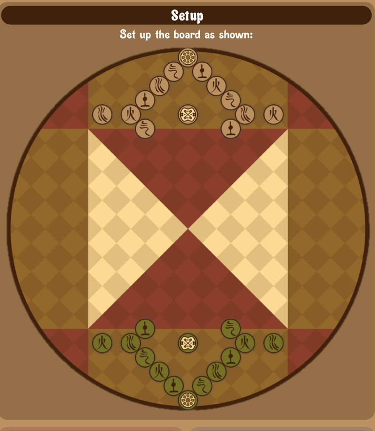
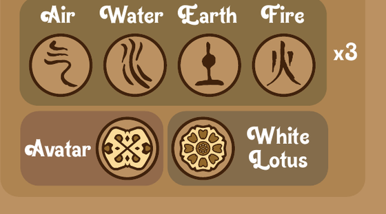
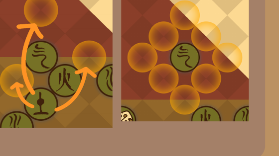
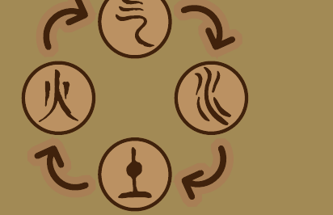
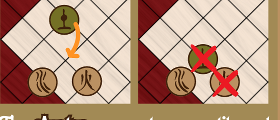

Nick Pai Sho
Walk your White Lotus to the center — or checkmate your rival — while every capture follows the Avatar cycle.
Objective
Move your White Lotus to the center of the board, or checkmate your opponent, to win.
Setup
Set up the board as shown, each player's pieces arranged in an arc around their own edge, White Lotus at the point.

Components
Each player commands the four elements — three each of Air, Water, Earth and Fire — plus a single Avatar and a single White Lotus.


Movement
Every tile can move to any empty point surrounding it. Non-Lotus tiles can also jump over friendly tiles.
You can chain several jumps together, but you may only do one type of movement per turn — either a single step or a chain of jumps, not both.
Capturing
Capturing follows the Avatar cycle. To capture an enemy piece, move your piece next to theirs and remove theirs from the game.
Your own piece will be captured if you move it next to an enemy tile that can capture it. If it lands next to both a capturable enemy and an enemy that can capture it, both captures take place.


The Avatar
The Avatar can capture any tile and can be captured by any tile. After yours has been captured, if you then capture your opponent's Avatar, yours respawns in its starting location — move any tile currently in that spot to a surrounding empty point.
The White Lotus
Your White Lotus is your King. It cannot capture, and instead of being captured it is put in check — you must remove it from check on your turn, or it's checkmate.
You may not move your Lotus into check, even for a winning move — including moving it adjacent to the enemy Lotus.
If no player can move their Lotus to the center, the game ends in a stalemate.